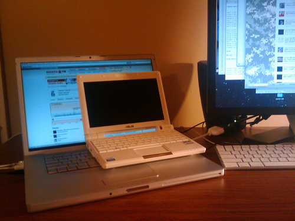

After visiting New England carputer meet, I became interested to build something again. Certainly, this time it would be nothing as ambitious as my previous undertaking, it was an amazing endeavor, but it was an expensive and time consuming one. Worst of all, it was not a mobile solution, that is attached to the car, which is not ideal for person like me, who doesn't keep cars for too long.
So, this time it's going to be a semi-mobile solution, which I will be able to take out of the car easily. This build has began with buying a new Asus EEE PC 900 on ebay.

Asus EEE PC 900 netbook.
Immediate plans for the general setup include some sort of mount, and stable power source. Thinking about second battery, but undecided yet. I already have Sprint mobile broadband card, which pretty much lets me listen to anything online — pandora.com, imeem.com, moskva.fm, etc.
Progress can be tracked at my carputer page.